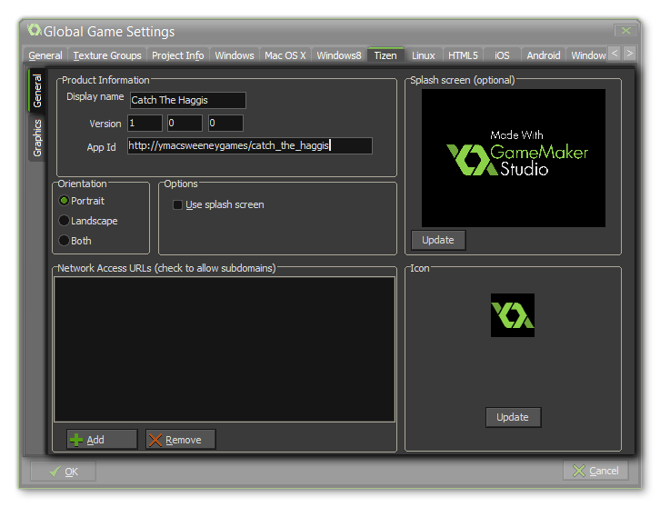
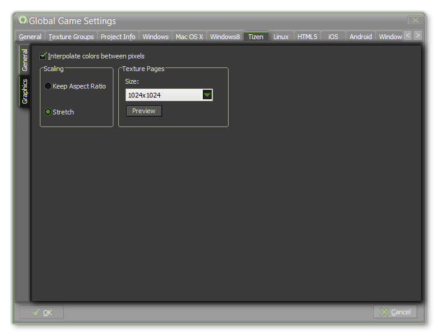

The Tizen tab is split into two separate sub-tabs (accessible on the left of the window) to make changing and updating the information for your game clearer and less complicated. These tabs are explained in the following sections.
 The General tab is where you control the game information and splash screens, and the first thing to fill out for your Tizen game is the Product Info which has the following fields:
- Display Name: The name of your game as it is to be displayed on the Tizen device and stores.
- Version: The version that you are building.
- App Id: The app id in url format.
Once that is done you will need to give your game an icon
and a Splash Screen. The icon should be authored as a
108x108px *.png file, but unlike other app icons, this should be
circular with a transparent border. The splash screen should
be 800x480px and *.png too, and it will be scaled to fit higher
resolution devices. Note that for the splash screen to show you
must also tick the Use Splash Screen option. You are can
then choose to lock the game to a specific orientation by checking
either landscape, portrait, or both in the Orientation
section of the tab.
The section of this tab labelled Network Access URLs is
where you must specify the URL of any page that your device will
access. Once you add a domain to the URL list, you can also tick
the checkbox to the left to indicate that all sub-domains of this
URL should also be permitted. If you do not specify any URL, the
game will not be able to use any of the http functions.
 The graphics tab permits to change some of the behaviours related to how your games graphics are compiled and displayed, with the following options available:
- Interpolate colours between pixels - Turns on interpolation, which basically "smooths" pixels. for crisp pixel graphics, it should be off, but if you have nice alpha blends and smoothed edge graphics it is better left on.
- Scaling - Here you can choose to maintain aspect ratio (so a 4:3 room will be "letter boxed" on a 16:9 display) or to scale fully (stretching the image to fit the full screen).
- Texture Page - Set the size of the texture pages to be created for your game. The default (and most compatible) size is 1024x1024, but you can choose from anywhere between 256x256 up to a whopping 8192x8192! There is also a button marked View which will generate the texture pages for this platform and then open a window so that you can see how they look. This can be very useful if you wish to see how the texture pages are structured and to prevent having texture pages larger (or smaller) than necessary.
NOTE: Be aware that the larger the size of the texture
page, the less compatible your game will be.
WARNING! Switching off the application surface will
disable all the scaling options set in the Global Game Settings
until it has been switched back on again. See The
Application Surface for further details.
| Converted from CHM to HTML with chm2web Standard 2.85 (unicode) |